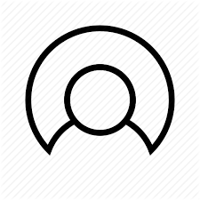

Welcome to the Department of Electronics and Communication Engineering.
The Department of Electronics and Communication Engineering at UEC, Ujjain was established in 1985.
It offers Bachelor of Engineering (B.E.), Master in Technology (M.Tech.) in Digital Communication and
Ph. D. in various fields of Electronics and Communication Engineering. The Under Graduate course
(B.E. - Electronics and communication Engg.) had been accredited for NBA for 3 years in 2004.
The Department has a blend of young as well as experienced dynamic faculty members and is committed
to providing quality education and research in the field. Furthermore, the department is equipped
with the state of the art experimental and computational facilities for graduate, postgraduate and
PhD students. Department participated in Technical Education Quality Improvement Programme (TEQIP) - II
and III Programmes.
Name:DR. NEHA SHARMA
Email:nehatripathi@yahoo.com
